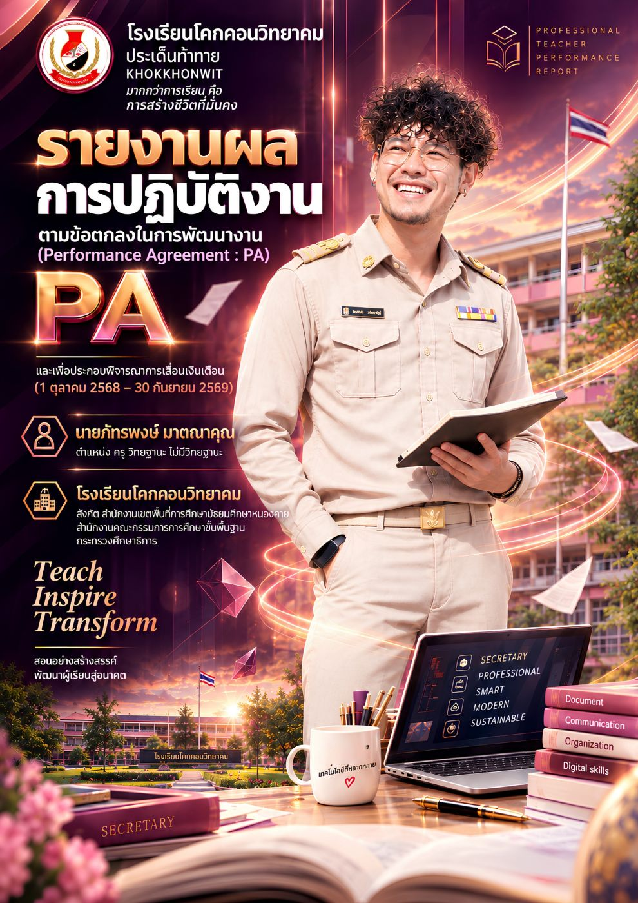
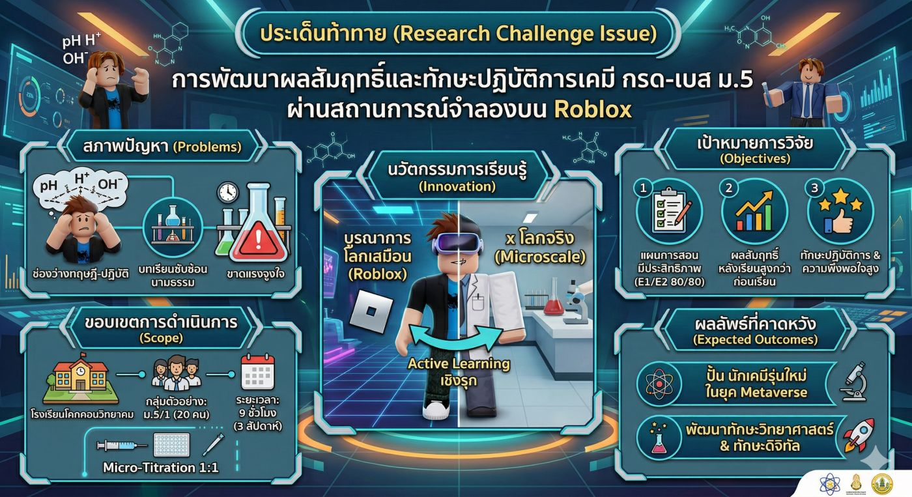
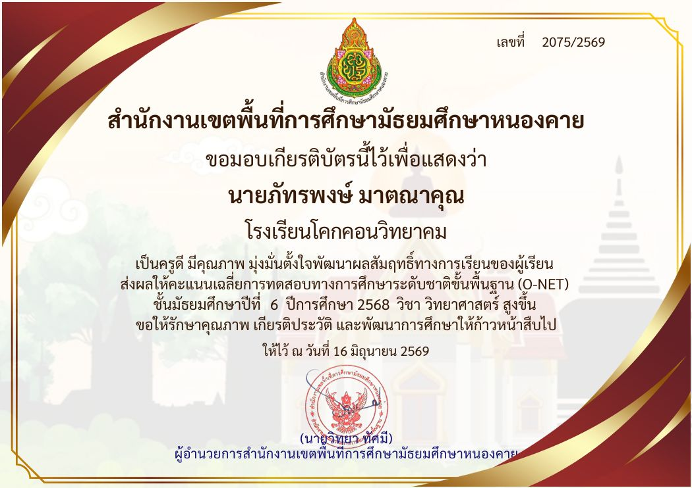
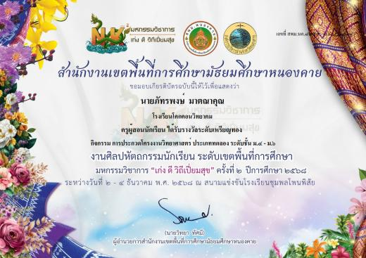
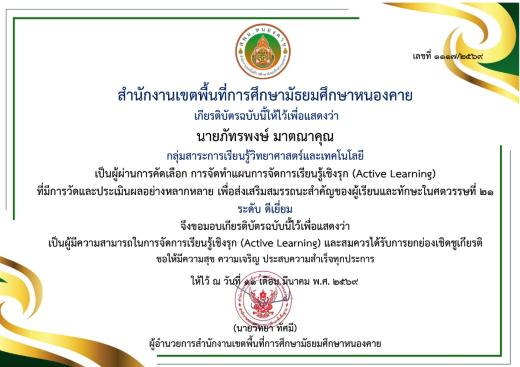
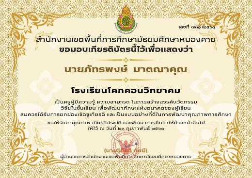

โรงเรียนโคกคอนวิทยาคม · สำนักงานเขตพื้นที่การศึกษามัธยมศึกษาหนองคาย
รายงานผลการปฏิบัติงาน ตามข้อตกลงในการพัฒนางาน PA ปีงบประมาณ ๒๕๖๙
นายภัทรพงษ์ มาตณาคุณครู · กลุ่มสาระการเรียนรู้วิทยาศาสตร์และเทคโนโลยี (เคมี) · ผู้สอนเขียนโปรแกรมภาษา C++
- 0ลักษณะงานตามมาตรฐานตำแหน่ง
- 0ตัวชี้วัดกรอบครูชำนาญการพิเศษ
- 0ชั่วโมงพัฒนาตนเอง
- 0ร่องรอยหลักฐาน
ผู้รายงาน
ครูเคมีที่เชื่อว่าห้องทดลองที่ดีที่สุด คือห้องที่ผู้เรียนทุกคนได้ลงมือทำด้วยตนเอง

- ชื่อ – สกุล
- นายภัทรพงษ์ มาตณาคุณ
- ตำแหน่ง
- ครู (ยังไม่มีวิทยฐานะ) เลขที่ตำแหน่ง 3923
- วุฒิการศึกษา
- ครุศาสตรบัณฑิต วิชาเอกวิทยาศาสตร์ (เคมี) มหาวิทยาลัยราชภัฏอุดรธานี
- บรรจุเข้ารับราชการ
- 25 กันยายน 2566 · ผ่านการประเมินครูผู้ช่วยครบ 4 ครั้ง
- ครูที่ปรึกษา
- ม.2/1 (ภาคเรียนที่ 2/2568) และ ม.3/2 (ภาคเรียนที่ 1/2569)
- งานพิเศษ
- ผู้ช่วยกลุ่มบริหารงานบุคคล · หัวหน้าครูเวรวันอังคาร · ผู้รับผิดชอบหลัก STEAM INNOVATION 2569
- รอบการประเมิน
- ปีงบประมาณ 2569 (1 ต.ค. 2568 – 30 ก.ย. 2569) · ครั้งที่ 2 : 1 เม.ย. – 30 ก.ย. 2569
- ระดับที่คาดหวัง
- ครู : ปรับประยุกต์ (Apply & Adapt) — รายงานนี้เทียบเคียงกรอบครูชำนาญการพิเศษ : ริเริ่ม พัฒนา (Originate & Improve)
{kind=link}
{kind=link}
ตารางธาตุแห่งการปฏิบัติงาน
ลักษณะงานตามมาตรฐานตำแหน่ง 3 ด้าน 15 ธาตุ — แตะที่ธาตุเพื่อดูงาน ผลลัพธ์ ตัวชี้วัด และหลักฐาน
ประเด็นท้าทาย
Acid – Base Frontier : เมื่อห้องแล็บเสมือนบน Roblox จับมือกับปฏิบัติการเคมีแบบย่อส่วน
{kind=link}

การพัฒนาผลสัมฤทธิ์ทางการเรียนและทักษะปฏิบัติการเคมี เรื่อง กรด – เบส ของนักเรียนชั้น ม.5 โดยใช้รูปแบบการสอนเชิงรุกผ่านสถานการณ์จำลองบน Roblox ร่วมกับปฏิบัติการเคมีแบบย่อส่วน
เนื้อหากรด – เบส เป็นนามธรรมสูง ต้องคำนวณ pH ด้วยลอการิทึม ผู้เรียนขาดแรงจูงใจ ขณะที่การทดลองแบบดั้งเดิมมีสารเคมีและอุปกรณ์ไม่พอให้ทุกคนได้ลงมือทำ ผู้เรียนกังวลเรื่องความปลอดภัย และเกิดของเสียมาก จึงบูรณาการเทคโนโลยีโลกเสมือนกับปฏิบัติการเคมีแบบย่อส่วน เพื่อการเรียนรู้เชิงรุกที่สนุก ปลอดภัย และเข้าถึงผู้เรียนทุกคนแบบ 1 : 1
- วิเคราะห์ หลักสูตร ผู้เรียน และผลการเรียนย้อนหลัง — ม.5/1 จำนวน 20 คน 9 ชั่วโมง
- ออกแบบ สถานการณ์จำลอง "Acid – Base Frontier" บน Roblox และชุด Microscale Kit 1 ชุดต่อ 1 คน
- ตรวจสอบ คุณภาพเครื่องมือโดยผู้เชี่ยวชาญ (IOC) หาค่าความยาก อำนาจจำแนก ความเชื่อมั่น
- จัดการเรียนรู้ ด้วย 5E + Gamification ฝึกในโลกเสมือนก่อน แล้วปฏิบัติจริงด้วยชุดย่อส่วน
- วิเคราะห์ผล E1/E2, t-test แล้วสะท้อนผ่าน PLC เพื่อปรับปรุงและขยายผล
- 80/80ประสิทธิภาพของแผน E1/E2
- .05ผลสัมฤทธิ์หลังเรียนสูงกว่าก่อนเรียนอย่างมีนัยสำคัญ
- 75%ผู้เรียนมีทักษะปฏิบัติการระดับดีขึ้นไป
- มาก+ความพึงพอใจต่อนวัตกรรม
ตัวชี้วัดกรอบครูชำนาญการพิเศษ
ด้านที่ 1 ทักษะการจัดการเรียนรู้และการจัดการชั้นเรียน 8 ตัวชี้วัด · ด้านที่ 2 ผลลัพธ์การเรียนรู้ของผู้เรียน 4 ตัวชี้วัด · ระดับที่คาดหวัง "ริเริ่ม พัฒนา"
ผลงานเชิงประจักษ์
ผลลัพธ์ที่วัดได้จริงในปีงบประมาณ 2569
{kind=link}

{kind=link}
{kind=link}

{kind=link}

{kind=link}

ผลงานนักเรียนใน Tinkercad Circuits
วงจร Arduino UNO และโปรแกรมภาษา C++ ของนักเรียนห้อง ม.6/2 — นับเลขด้วยลูป ไฟ LED กระพริบ และโปรแกรมต้นไม้ จากห้องเรียน Tinkercad ที่ครูเป็นผู้สอน
การมีส่วนร่วมในการพัฒนาการศึกษา
องค์ประกอบที่ 2 · ภาพกิจกรรมตลอดปีงบประมาณ 2569
วินัย คุณธรรม จรรยาบรรณ
องค์ประกอบที่ 3 · การปฏิบัติตน 10 ประการ
การพัฒนาตนเองและวิชาชีพ
108.30 ชั่วโมง · สพม.หนองคาย · สพฐ. · คุรุสภา · Canva Education — ลากเพื่อเลื่อนดู
สอดคล้องกับนโยบาย สพฐ.
นโยบายและจุดเน้น ประจำปีงบประมาณ 2569 – 2570 จำนวน 11 นโยบาย และนโยบายเร่งด่วน Quick Win 3 ข้อ
"มากกว่าการเรียน คือการสร้างชีวิตที่มั่นคง"
ขอรับรองว่ารายงานผลการปฏิบัติงานฉบับนี้เป็นความจริงทุกประการ
นายภัทรพงษ์ มาตณาคุณ
ตำแหน่ง ครู โรงเรียนโคกคอนวิทยาคม · 11 กันยายน 2569